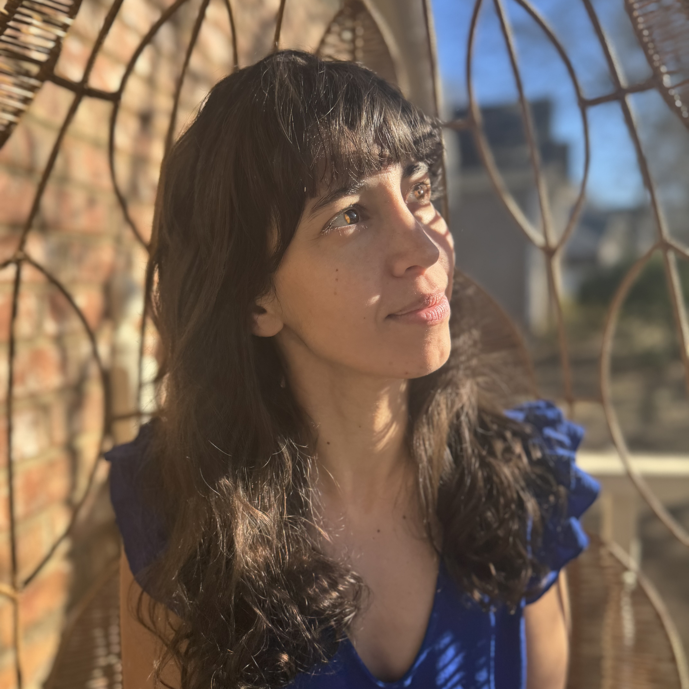

Roza Güneş Bayrak
Honestly, making art just makes life better. It's a reason to slow down in a world that never does, to sit with something, a tree, a face, a bit of light and just lose track of time. Mostly working in watercolor, drawing, and printmaking these days, leaning toward impressionism with a touch of realism. I have a real love for color that's bold, the kind that makes a piece feel like me. Also an ML engineer by day, so there’s probably always been a seeker of patterns underneath it all. But art is where that turns inward, more about what is going on in here, not just looking out at the world, but looking at my place in it. It is a space to not have all the answers, to let something stay a little messy, a little unresolved, and feel true to who I am.
My work has been shown in juried exhibitions including the TnWS Biennial 2026 at the Customs House Museum, Clarksville, TN.